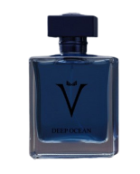

Bienvenido a Mont Valdor
Mont Valdor nació de la idea de que un perfume no es solo un aroma, sino una forma de presentarse ante el mundo. Cada fragancia de la colección combina ingredientes seleccionados con un diseño de frasco pensado para durar en el tiempo, tanto en el recuerdo como en el tocador.
Ver la colecciónSobre la marca
Nuestra historia
Mont Valdor comenzó como un proyecto pequeño de perfumería artesanal y con el tiempo se convirtió en una marca reconocida por su estilo sobrio y elegante. Cada lanzamiento se piensa como una edición cuidada, no como un producto masivo.
Nuestros ingredientes
Trabajamos con esencias naturales combinadas con notas amaderadas y especiadas, buscando siempre un equilibrio entre intensidad y sutileza que acompañe distintos momentos del día.

Galería



Datos destacados
+15 años
de trayectoria en el desarrollo de fragancias de autor.
Ingredientes premium
seleccionados de proveedores especializados en perfumería fina.
Ediciones limitadas
frascos numerados que no vuelven a producirse una vez agotados.
Seguí conociendo el mundo del perfume
Si te interesa la historia y la composición de las fragancias, podés visitar el artículo de Wikipedia sobre el perfume para conocer más sobre su origen y elaboración.
Leer más en Wikipedia →